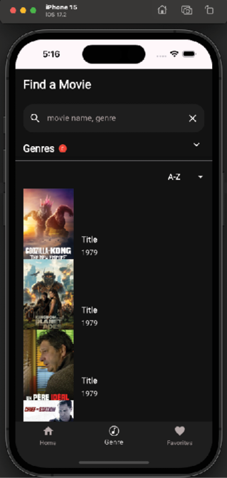
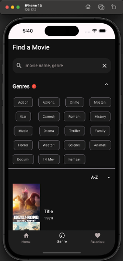
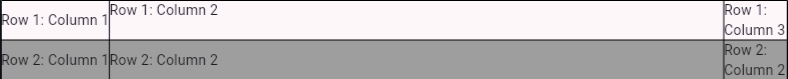
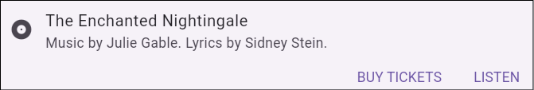
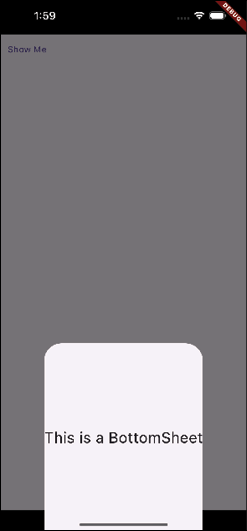
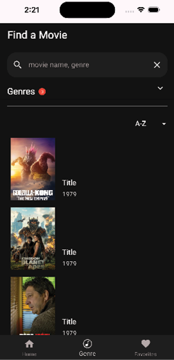
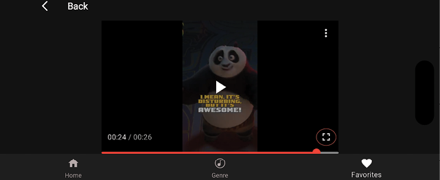

CHAPTER 7 Advanced Widgets
Introduction
In this chapter, you will learn about advanced Flutter widgets and how to use them in your movie app. This will allow you to show more information on the screen as well as show that data in different ways. These are essential widgets that are used in Flutter apps. Widgets for showing large numbers of other widgets are critical for most apps.
Structure
The chapter covers the following topics:
- ListView
- Expanded
- Stack
- IndexedStack
- LayoutBuilder
- GridView
- Table
- Card
- BottomSheets
- Slivers
- Movie trailers
Objectives
You will learn about the more advanced widgets that Flutter provides. These widgets require more setup but can do some amazing things. As you learn about these widgets, you will build out the movie app with them. By the end of the chapter, you will know how to show horizontal and vertical lists of data, grids of data, and how to stack widgets. You will also have a solid understanding of slivers.
ListView
In the last chapter, you used a column to display some movie titles. If your screen was a bit smaller or you added one more item, you would have seen a striped line with the message about overflow. This happens when your widget overflows the area it can draw. To avoid that problem, you need a widget that can scroll. ListView is one of the main widgets that are used to display a list of items either horizontally or vertically. You will use the same class and just change the orientation field if you want to show them horizontally. ListView has several different constructors you can use to display your list, as follows:
-
ListView: Default constructor. Uses a children parameter for a fixed list of widgets. -
ListView.builder: Uses two key fieldsitemCount(number of items) anditemBuilder(used to return an item for a specific index). -
ListView.separated: Like a builder but puts dividers between each row. -
ListView.custom: Uses achildrenDelegatethat is like a builder, returning items for a given index. Delegates provide a lot more power than just using a builder.
You will probably use either the builder or the separated constructors the most. They are flexible and easy to use.
All these methods take a ScrollController as a parameter. You do not have to pass one in, but if you do not, one will be created for you. A scroll controller will allow you to jump or animate to a specific position in the list. Vertical lists are the default. If you want a horizontal list, you will pass the following:
scrollDirection: Axis.horizontal
The builder and separated constructors take a builder parameter that looks as follows:
builder: (BuildContext context, int index) {}
Here, the index is the index value in your list of items to show. To see how ListView works, we will convert the VerticalMovieList Column to use a ListView that can handle a scrolling list of movies. Open vert_movie_list.dart and replace the column in the build method with the following:
return ListView.builder(
itemCount: movies.length,
itemBuilder: (context, index) {
return MovieRow(
movie: movies[index],
);
},
);
Now, return to genre_screen.dart and update the call to:
VerticalMovieList(movies: images, onMovieTap: (movieId) {},),
This will send the whole list of movies to the widget. Hot reload. You will probably see a white screen with lots of errors in the console. You will see the following error message a lot:
Vertical viewport was given unbounded height.
This means that one or several widgets do not give a fixed height and try to take up an infinite height, which causes this error. How do we solve this? We will use the Expanded widget.
Expanded
The Expanded widget tries to take up as much width or height as its row or column will allow. Expanded only works in these two widgets - Row and Column. Wrap the ListView call in an Expanded and hot reload. The following code uses an Expanded widget to fill the column and then a ListView with the list of movies:
return Expanded(
child: ListView.builder(
itemCount: movies.length,
itemBuilder: (context, index) {
return MovieRow(
movie: movies[index],
);
},
),
);
Here is what we have so far. Notice that you can scroll the list of movies, as shown in the following figure:

Figure 7.1: ListView
Now, open horiz_movies.dart. In Chapter 4, Basic Widgets (Adding a movie row), you added a ListView to this class. Here, you can see that it is a horizontal list and uses the movies list passed in. The code for this is as follows:
// 1
return SizedBox(
height: 142,
child: ListView.builder(
// 2
scrollDirection: Axis.horizontal,
// 3
itemCount: movies.length,
// 4
itemBuilder: (context, index) {
return GestureDetector(
onTap: () {},
child: SizedBox(
width: 100,
height: 142,
child: CachedNetworkImage(
imageUrl: movies[index],
alignment: Alignment.topCenter,
fit: BoxFit.fitHeight,
height: 100,
width: 142,
),
),
);
},
),
);
The description of the code is as follows:
- This shows a horizontal list of movies at a fixed height of 142 pixels.
- Make this a horizontal list.
- Set the item count to the number of movies.
- Use the
itemBuilderto return a 100x142 movie image.
Stack
A Stack widget displays its children, with the first one in the list displayed at the bottom. The advantage of this widget is you can use the Positioned widget to place items on top of each other or on different sides of the stack’s box. The Positioned widget takes the top, left, bottom, and right position parameters. These are pixels from the top and left. You can also use the Align widget, which has an alignment parameter that can be topCenter, topLeft, topRight, centerXXX, and bottomXXX. The detail page will use the stack to show text on top of an image. A Stack with an image would be created by using the following code:
return Stack(children: [
Align(
alignment: Alignment.topCenter,
child: CachedNetworkImage(
imageUrl: imageUrl,
alignment: Alignment.topCenter,
fit: BoxFit.fitWidth,
height: 200,
width: screenWidth,
),
),
]),
This will show an image in the top center of the stack. If you add additional images or text, they will lay on top of this image. This is useful for our detail page, where we want to display the movie details above the image.
IndexedStack
A IndexedStack widget is like a stack but displays only one child at a time. It is useful as a paging widget that allows the user to display different pages when they click on a controlling widget. It would look as follows:
return IndexedStack(
index: _selectedIndex,
children: [widget1, widget2, widget3],
);
Another widget would change _selectedIndex to have the stack change.
LayoutBuilder
If you ever need to know how big an area is to draw in, then LayoutBuilder is a great widget. It uses a builder parameter that passes in a BoxConstraints. Then, based on the constraints of min and max, width, and height, you decide whether to show different layouts or just size a widget to the max width or height. This is perfect for when you have a fixed size and want to put an image inside. Just use a SizedBox with the constraints, max width, or height. These constraints are the parent's constraints and are useful if you need to do any custom layouts. You could use one layout for tablets and another for phones using the maxWidth field. The following is a small example:
@override
Widget build(BuildContext context) {
return MaterialApp(
debugShowCheckedModeBanner: false,
home: Scaffold(
body: Center(
child: LayoutBuilder(builder: (context, constraints) {
if (constraints.maxWidth > 600) {
return Row(children: [Text('Wide Screen')]);
} else {
return Column(children: [Text('Narrow Screen')]);
}
}),
),
),
);
}
You can see that we check the maxWidth property of the constraints parameter, and if it is greater than 600 (which usually signifies a tablet), we show a different layout than if it is smaller than 600 (like on a phone).
GridView
GridView takes lists to the next level. They allow you to display items both horizontally and vertically. There are also ways to display a fixed set of columns or to even stagger mixed widths and heights. Grids work a bit differently in that they take a delegate, which is of type SliverGridDelegate (Slivers will be talked about in upcoming sections), and describe how the rows and columns will be set. Like list views, grids have several constructors, as follows:
GridView: Default constructor.GridView.builder: Use a builder to return a widget.GridView.count: Display items with a fixed count of cross-axis items.GridView.extend: Each item has a maximum cross-axis size.GridView.custom: Roll your own Grid. There are no defaults; you must provide all parameters.
Open up genre_section.dart and scroll to the last row. Here, we just showed a list of about four chips. To display more, we will be using a GridView. Replace the Row with the following:
child: GridView.builder(
shrinkWrap: true,
// 1
itemCount: chips.length,
// 2
gridDelegate:
// 3
const SliverGridDelegateWithMaxCrossAxisExtent(
maxCrossAxisExtent: 100,
crossAxisSpacing: 16,
childAspectRatio: 1.5,
mainAxisSpacing: 0,
),
// 4
itemBuilder: (BuildContext context, int index) {
return chips[index];
},
),
This uses the builder constructor with several parameters, as follows:
itemCountis the total number of items.gridDelegatedescribes how the grid will be laid out.- This delegate lays out its children with a width of 100, 16 pixels of vertical space, and an aspect ratio of 1.5 (set the cross-axis height as a ratio of the width).
- Return an item at the given index.
Back in genre_screen.dart, update the list of genres to include the full list, as follows:
GenreState(genre: 'Action', isSelected: false),
GenreState(genre: 'Adventure', isSelected: false),
GenreState(genre: 'Crime', isSelected: false),
GenreState(genre: 'Mystery', isSelected: false),
GenreState(genre: 'War', isSelected: false),
GenreState(genre: 'Comedy', isSelected: false),
GenreState(genre: 'Romance', isSelected: false),
GenreState(genre: 'History', isSelected: false),
GenreState(genre: 'Music', isSelected: false),
GenreState(genre: 'Drama', isSelected: false),
GenreState(genre: 'Thriller', isSelected: false),
GenreState(genre: 'Family', isSelected: false),
GenreState(genre: 'Horror', isSelected: false),
GenreState(genre: 'Western', isSelected: false),
GenreState(genre: 'Science Fiction', isSelected: false),
GenreState(genre: 'Animation', isSelected: false),
GenreState(genre: 'Documentation', isSelected: false),
GenreState(genre: 'TV Movie', isSelected: false),
GenreState(genre: 'Fantasy', isSelected: false),
Do a hot restart as a reload will not re-run the initState method. The following figure shows a grid of columns and rows:

Figure 7.2: GridView
As you can see, there are four columns and five rows. If the screen changes sizes (like on the web), it will expand to fill the area.
Table
Tables are great for data that needs to be displayed in columns and rows. You can set each column width, and have a border. A Table's children are a list of TableRow widgets. Each row can contain a normal widget or a TableCell widget. TableCell can control the alignment of the widget it contains. One of the differences between a GridView and a Table is that a GridView tries to size its columns and rows based on its widgets, while a Table forces its widgets to fit into the size of the column. The following is an example:
@override
Widget build(BuildContext context) {
return MaterialApp(
debugShowCheckedModeBanner: false,
home: Scaffold(
// 1
body: Table(
// 2
border: TableBorder.all(),
// 3
columnWidths: const <int, TableColumnWidth>{
0: IntrinsicColumnWidth(),
1: FlexColumnWidth(),
2: FixedColumnWidth(64),
},
defaultVerticalAlignment: TableCellVerticalAlignment.middle,
// 4
children: <TableRow>[
// 5
TableRow(
children: <Widget>[
Text('Row 1: Column 1'),
// 6
TableCell(
verticalAlignment: TableCellVerticalAlignment.top,
child: Text('Row 1: Column 2'),
),
Text('Row 1: Column 3'),
],
),
TableRow(
decoration: const BoxDecoration(
color: Colors.grey,
),
children: <Widget>[
Text('Row 2: Column 1'),
Text('Row 2: Column 2'),
Center(
child: Text('Row 2: Column 2'),
),
],
),
],
),
),
);
}
This will be displayed as shown in the following figure:

Figure 7.3: Table
The code uses several widgets that are needed for a Table: TableRow for rows and TableCells or other widgets for the individual items. The code is described by the following:
- Start with the
Tablewidget. - You can specify a border if needed. This can specify the color, line width, and border radius.
- You can specify different column widths. Either fixed or sized for the included widgets.
- The children should have a list of
TableRow. - Each
TableRowcan have a list of table columns. The number of widgets should match the number of columns. - Besides regular widgets, you can use a
TableCellto add more formatting.
Of course, tables are great for data that you would use in a spreadsheet, but they can be used if you want fixed columns.
Card
Cards have rounded borders with elevations. They are useful for having sections stand out from the rest of the layout. You can add a child widget that can also contain other widgets. For example:
Card(
child: Column(
children: [
Text('Title of Object'),
Text('Description of Object')
],
),
)
You can set the color, shadowColor, surfaceTintColor, elevation, and shape. The following is an example of a ticket card:

Figure 7.4: Card
Apart from the default constructor (which builds an elevated card), you can use Card.filled for a filled card and Card.outlined for an outline card.
BottomSheets
As the name implies, BottomSheets are information items that are on the bottom of the screen. There are two kinds: Persistent and modal. Persistent sheets will stay in place, while modal sheets force the user to interact with the sheet until it is dismissed. These sheets can be animated and can have a drag handle. To show a bottom sheet, you would use the showBottomSheet method, and in the builder function, you would return a widget. You can change the background color using the backgroundColor parameter. A BottomSheet might look as follows:

Figure 7.5: BottomSheet
The code is as follows:
@override
Widget build(BuildContext context) {
return MaterialApp(
debugShowCheckedModeBanner: false,
home: SafeArea(
child: Scaffold(
body: TextButton(
child: Text('Show Me'),
onPressed: () {
// 1
showModalBottomSheet(
context: context,
// 2
builder: (BuildContext context) {
return Container(
height: 300,
child: Column(
mainAxisAlignment: MainAxisAlignment.center,
children: [
Text(
'This is a BottomSheet',
style: TextStyle(fontSize: 24),
),
],
),
);
},
);
},
),
),
),
);
}
This code shows a modal bottom sheet when the user presses the text button.
Slivers
Slivers are scrollable widgets and can be used in lists of slivers. You need to use a CustomScrollView as a parent widget and then add slivers to the slivers list parameter. There are many different types of slivers, as follows:
SliverList: Displays a linear list of items.SliverGrid: Displays a 2D array of children.SliverAppBar: A material design app bar that integrates with aCustomScrollViewand allows the bar to change while scrolling other items.SliverToBoxAdapter: A sliver that contains a single box widget. Useful for converting slivers to a widget that conforms to a regular type of widget.SliverPadding: Adds padding around another sliver.
通常可滚动组件的子组件可能会非常多、占用的总高度也会非常大；如果要一次性将子组件全部构建出将会非常昂贵！为此，Flutter中提出一个Sliver（中文为“薄片”的意思）概念，Sliver 可以包含一个或多个子组件。Sliver 的主要作用是配合：加载子组件并确定每一个子组件的布局和绘制信息，如果 Sliver 可以包含多个子组件时，通常会实现按需加载模型。
只有当 Sliver 出现在视口中时才会去构建它，这种模型也称为“基于Sliver的列表按需加载模型”。可滚动组件中有很多都支持基于Sliver的按需加载模型，如ListView、GridView，但是也有不支持该模型的，如SingleChildScrollView。
The first sliver you will use is SliverPadding. You will create your own sliver widget to create a divider. In the widgets folder, create a new file named sliver_divider.dart. Add the following:
import 'package:flutter/material.dart';
import 'package:movies/ui/theme/theme.dart';
class SliverDivider extends StatelessWidget {
const SliverDivider({super.key});
@override
Widget build(BuildContext context) {
return const SliverPadding(
padding: EdgeInsets.only(left: 16, top: 8, right: 16, bottom: 8),
sliver: SliverToBoxAdapter(
child: Divider(
color: primaryButton,
thickness: 1.0,
),
),
);
}
}
Since this widget returns a SliverPadding, it is itself a sliver. The SliverToBoxAdapter class converts the widgets below to sliver (in this case, just a regular divider).
Open up genre_screen.dart. We are going to convert some of the items into slivers. Find the first Row. Remove the Row and GenreSearchRow and replace it with the following:
Expanded(
child: CustomScrollView(
slivers: [
SliverList(
delegate: SliverChildListDelegate(
[
Padding(
padding: const EdgeInsets.fromLTRB(16, 16.0, 0.0, 24.0),
child: Text(
'Find a Movie',
style: Theme.of(context).textTheme.titleLarge
),
),
GenreSearchRow((searchString) {}),
],
),
),
],
),
),
Change the Divider to SliverDivider and import the widget. You will next need to fix the number of parentheses and brackets at the end. This is good practice as you will do this many times. The following is what the ending of the widget looks like:
],
),
),
);
}
}
Dealing with parentheses is one area that gets messy with widgets. However, the more you break your widgets up into their own classes, the smaller each class will be and the easier it will be to read. Hot reload your app to make sure it still works. You should get an error, and it should look as follows:
A RenderViewport expected a child of type RenderSliver but received a child of type _RenderMergeableMaterialListBody.
Any idea what this means? If you have a list of slivers and one of them is not one, you will get this message. That means one of the widgets is not a sliver. It looks like VerticalMovieList uses an Expanded (which can only be in a row or column) and a ListView. Let us change that. Open up vert_movie_list.dart and change Expanded and the ListView.builder (up to the itemBuilder) to the following:
return SliverList(
delegate: SliverChildBuilderDelegate(
childCount: movies.length,
(BuildContext context, int index) {
Open genre_section.dart and add the following before the ExpansionPanelList:
return SliverList(
delegate: SliverChildListDelegate([
Remove the return before the ExpansionPanelList. Fix the ending parentheses. Next, open up sort_picker.dart. Add a new parameter, as follows:
final bool useSliver;
Replace the constructor with the following:
const SortPicker({required this.useSliver, required this.onSortSelected, super.key});
Replace the line: Widget build(BuildContext context) { with the following:
Widget build(BuildContext context) {
if (widget.useSliver) {
return SliverToBoxAdapter(
child: buildRow(),
);
} else {
return buildRow();
}
}
Widget buildRow() {
Back in genre_screen.dart, add the following:
useSliver: true,
The code provides the parameter to the SortPicker. Perform a hot restart, and the code should work. The following shows the Genres screen with the list of movies and the new SliverList:

Figure 7.6: Genre screen
You can now scroll through the list of movies and see all the movies on the list.
Movie trailers
One area that needs work is the ability to show videos. In the case of the movie app, the ability to show movie trailers. These are short videos that showcase the movie. To show a video from YouTube, we will use a plugin called pod_player. Open up pubspec.yaml and add the following:
pod_player: ^0.2.2
Run flutter pub get. In the ui/screens folder, create a new folder named videos. Then, create a new dart file named video_page.dart. Then add the following:
import 'package:flutter/material.dart';
import 'package:flutter_riverpod/flutter_riverpod.dart';
import 'package:pod_player/pod_player.dart';
class VideoPage extends ConsumerStatefulWidget {
final String movieVideo;
const VideoPage(this.movieVideo, {super.key});
@override
ConsumerState<VideoPage> createState() => _VideoPageState();
}
class _VideoPageState extends ConsumerState<VideoPage> {
late final PodPlayerController podPlayerController;
@override
Widget build(BuildContext context) {
return Placeholder();
}
}
Here, the only new code is the PodPlayerController. This class is a controller for the PodVideoPlayer widget from the pod_player plugin. Since this variable is defined as a late variable, we need to initialize it using the initState method. First, we need to create a utility method for building a YouTube video URL. Open up utils.dart and add the following:
String youtubeUrlFromId(String videoId) {
return 'https://www.youtube.com/watch?v=$videoId';
}
This is a simple method that just concatenates the video id to the URL. Back in video_page.dart, add the following before the build method:
@override
void initState() {
super.initState();
// 1
final playVideoFrom = PlayVideoFrom.youtube(
youtubeUrlFromId(widget.movieVideo),
);
// 2
podPlayerController = PodPlayerController(
playVideoFrom: playVideoFrom,
podPlayerConfig: const PodPlayerConfig(autoPlay: false),
)..initialise();
}
@override
void dispose() {
// 3
podPlayerController.dispose();
super.dispose();
}
These two methods, initState and dispose, set up and dispose of the video controller:
-
Use the new utility method to get the URL and create a
PlayVideoFromclass to pass to the controller. -
Create the controller passing in the video URL class and config.
-
Dispose of the controller when done.
Next, add a method to get the video player. Use the following code:
Widget getVideoPlayer(BuildContext context) {
return Scaffold(
appBar: AppBar(
backgroundColor: screenBackground,
leading: BackButton(
color: Colors.white,
onPressed: () {},
),
centerTitle: false,
title: Text('Back', style: Theme.of(context).textTheme.headlineMedium),
),
body: Container(
width: double.infinity,
height: double.infinity,
color: screenBackground,
child: Column(
mainAxisSize: MainAxisSize.max,
crossAxisAlignment: CrossAxisAlignment.center,
children: [
Expanded(
child: PodVideoPlayer(
controller: podPlayerController,
matchVideoAspectRatioToFrame: true,
),
),
],
),
),
);
}
At the bottom of the method is the PodVideoPlayer, use the controller and a flag to match the video's aspect ratio to the screen. Now replace the build method with the following:
@override
Widget build(BuildContext context) {
SystemChrome.setPreferredOrientations([
DeviceOrientation.portraitUp,
DeviceOrientation.portraitDown,
DeviceOrientation.landscapeLeft,
DeviceOrientation.landscapeRight,
]);
return getVideoPlayer(context);
}
The SystemChrome class is useful for changing the orientation of the device. Here, we change the device orientation to allow landscape and then return the video player. Return to main_screen.dart and change the last Placerholder with the following:
screens.add(VideoPage('QwW5RD02uJo'));
This calls the video page with a YouTube key that is a trailer for a Kung Fu Panda movie. Stop the app (When you have plugins that have device-specific code, you must rebuild your app and you cannot hot reload). Restart the app and click on the Favorites button.
Note: That we are just using this page to show the video but will be replacing it with favorites later.
The device will turn to landscape, as shown in the following figure:

Figure 7.7: Video screen
If you press the expand button, you will see the window expand to full screen. However, this depends on the video that you are playing. This specific video was built for phones in portrait mode, as shown in Figure 7.8:
Figure 7.8: Fullscreen video
In the chapter on the web and desktop, we will use a different package to show videos for the web.
Conclusion
In this chapter, you learned a lot about the more advanced widgets like ListView, GridView, Table, BottomSheets, and Slivers. You were able to update the app to use these advanced widgets to show more items. You also created a video page and were able to show a video trailer for a movie.
In the next chapter, you will learn about navigation and routing. This is a very important topic that will allow you to switch between different screens. You will use a specific package to push screens on a stack and pop them off when returning.